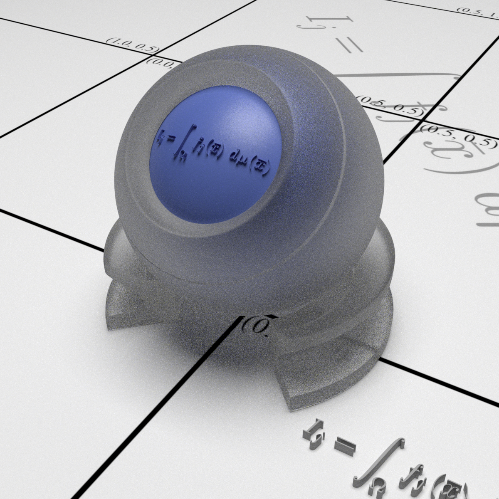
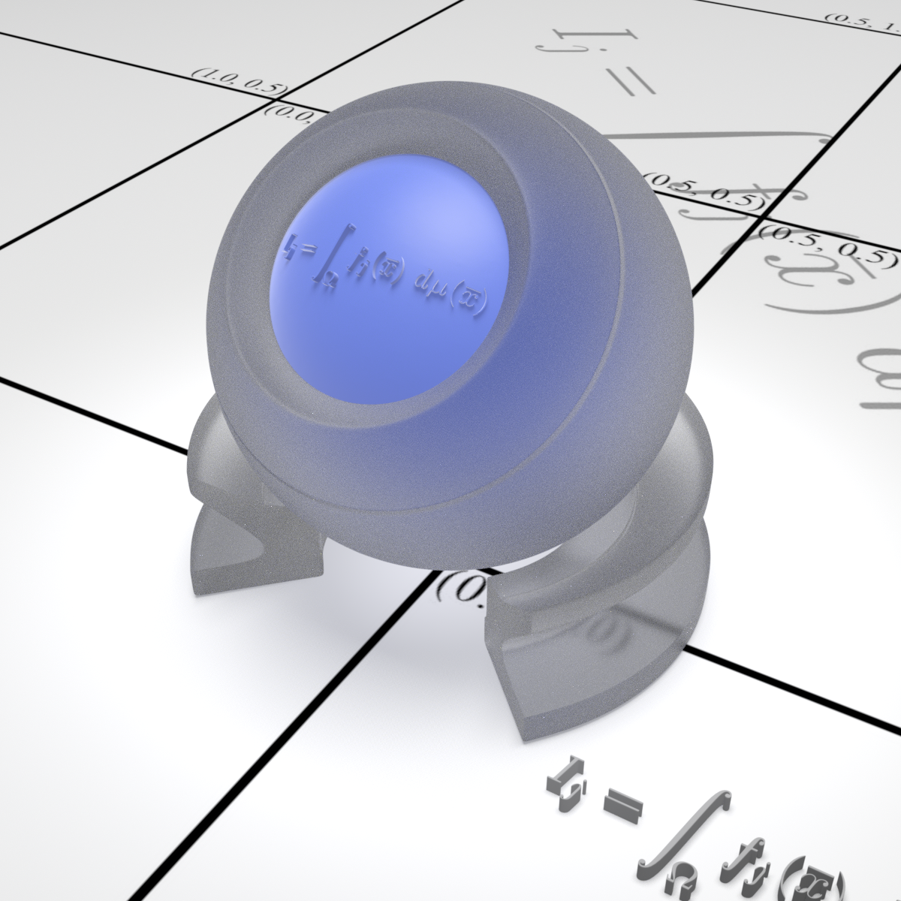

CSIE5098 Digital Image Synthesis — Final Project Report
This project implements Progressive Photon Mapping (PPM), proposed by Hachisuka et al. in their SIGGRAPH Asia 2008 paper "Progressive Photon Mapping", as a new integrator within the pbrt-v4 rendering system.
Path tracing, while unbiased, struggles with caustics and Specular–Diffuse–Specular (SDS) light transport paths. Photon mapping handles these cases naturally by tracing light paths forward from sources, but classic photon mapping is biased and memory-limited. PPM addresses both issues: it is consistent (converges to the correct answer) and uses bounded memory by processing photons in progressive passes rather than storing them all at once.
PPM alternates between two passes per iteration and progressively refines the photon density estimate by shrinking the search radius over time.
Shoot rays from the camera. At each diffuse surface hit, record a visible point storing position, outgoing direction, BSDF, and path throughput. Specular bounces are followed until a diffuse surface is reached.
All visible points are inserted into a uniform hash grid accelerator (same structure as pbrt-v4's SPPM). Each visible point occupies grid cells within its current search radius r.
Emit photons from light sources. At each surface hit, look up nearby visible points in the grid and accumulate photon contributions Φ = β × f(wo, wi) for all visible points within radius r.
After each iteration, update the photon count and shrink the radius using the alpha parameter (α = 0.7):
N_new = N + α × M r_new = r × sqrt(N_new / (N + M)) τ_new = (τ + Φ) × r_new² / r²
where M is photons collected this iteration, N is cumulative weighted count, and τ is the accumulated flux. α < 1 ensures the radius shrinks, making the estimate consistent.
The pixel radiance is computed as:
L = L_direct / iterations + τ / (N_total × π × r²)
where L_direct accumulates direct illumination from the camera pass, and the second term is the indirect photon density estimate.
pbrt-v4 already includes Stochastic Progressive Photon Mapping (SPPM) by Hachisuka et al. 2009. Our PPM implementation differs in two important ways:
alpha parameter (default 0.7)
where SPPM uses a fixed gamma = 2/3The implementation adds a new PPMIntegrator class to pbrt-v4's CPU integrator module.
Three files were modified:
Added PPMIntegrator class inheriting from Integrator, with the same
structure as SPPMIntegrator plus an alpha member for the radius reduction rate.
class PPMIntegrator : public Integrator {
public:
PPMIntegrator(Camera camera, Sampler sampler, Primitive aggregate,
std::vector<Light> lights, int photonsPerIteration, int maxDepth,
Float initialSearchRadius, Float alpha,
const RGBColorSpace *colorSpace);
static std::unique_ptr<PPMIntegrator> Create(...);
void Render();
private:
Camera camera;
Float initialSearchRadius;
Sampler samplerPrototype;
int maxDepth, photonsPerIteration;
Float alpha; // radius reduction parameter (default 0.7)
const RGBColorSpace *colorSpace;
SampledSpectrum SampleLd(...) const;
};
Added ~300 lines implementing three components:
Stores per-pixel state across iterations: current radius, accumulated direct radiance Ld,
accumulated flux tau, photon count n, and the visible point data
(position, BSDF, throughput).
The main render loop with the two-pass structure described above. Key implementation details:
ParallelFor2DParallelFor over photon indicesDirect lighting computation using MIS (Multiple Importance Sampling), identical to SPPM's implementation — samples one light per visible point per camera pass iteration.
Registered the new integrator so it can be invoked from scene files using "ppm":
else if (name == "ppm")
integrator = PPMIntegrator::Create(parameters, colorSpace, camera,
sampler, aggregate, lights, loc);
Integrator "ppm"
"integer maxdepth" [10]
"integer photonsperiteration" [50000]
"float radius" [0.5]
"float alpha" [0.7]
Sampler "halton" "integer pixelsamples" [64]
All renders use the lte-orb-rough-glass scene, which features a dielectric (glass) sphere producing caustic light transport. Renders used 64 iterations with 50,000 photons per iteration for PPM and SPPM, and the default sampler settings for volpath.


Measured on a server with 8× NVIDIA H200 GPUs (CPU rendering only) with multi-threaded execution.
Scene: lte-orb-rough-glass.
| Integrator | Real Time | CPU Time | Iterations | Photons/Iter | Notes |
|---|---|---|---|---|---|
| volpath | 0m 19s | 75m 37s | — | — | Single pass, unbiased |
| PPM ours | 21m 48s | 1040m 31s | 64 | 50,000 | α=0.7, per-iter seeding |
| SPPM built-in | 18m 48s | 908m 28s | 64 | 50,000 | γ=2/3, Halton sampling |
volpath is ~65× faster in real time than photon mapping methods at these settings. This is expected: path tracing traces a single ray tree per pixel, while PPM must emit 50,000 photons and rebuild the spatial hash grid every iteration, repeated 64 times.
PPM vs SPPM: Our PPM is approximately 16% slower than the built-in SPPM. The primary reason is sampling quality — SPPM uses a Halton low-discrepancy sequence for photon indices, which distributes samples more uniformly across iterations, leading to better convergence per photon. PPM uses a simpler per-iteration seed which may result in slightly more wasted work (photons in similar directions across iterations). Both methods use the same parallel infrastructure and spatial data structure, so the core algorithmic overhead is identical.
For scenes where photon mapping truly excels — sharp caustics from point lights through ideal glass — PPM and SPPM would significantly outperform path tracing in image quality at equal render time, since path tracing essentially cannot find these paths via random sampling.
SPPM (Hachisuka et al. 2009) improves upon PPM by using stochastic sampling — different pixels sample different photon paths each iteration — and Halton sequences for better sample stratification. Our PPM implementation is a faithful reproduction of the original 2008 algorithm, which serves as the conceptual foundation for SPPM and later photon mapping work.
PPMIntegrator in pbrt-v4 following Hachisuka et al. 2008"ppm" integrator in the scene file parser